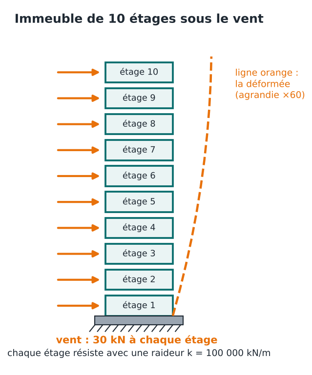
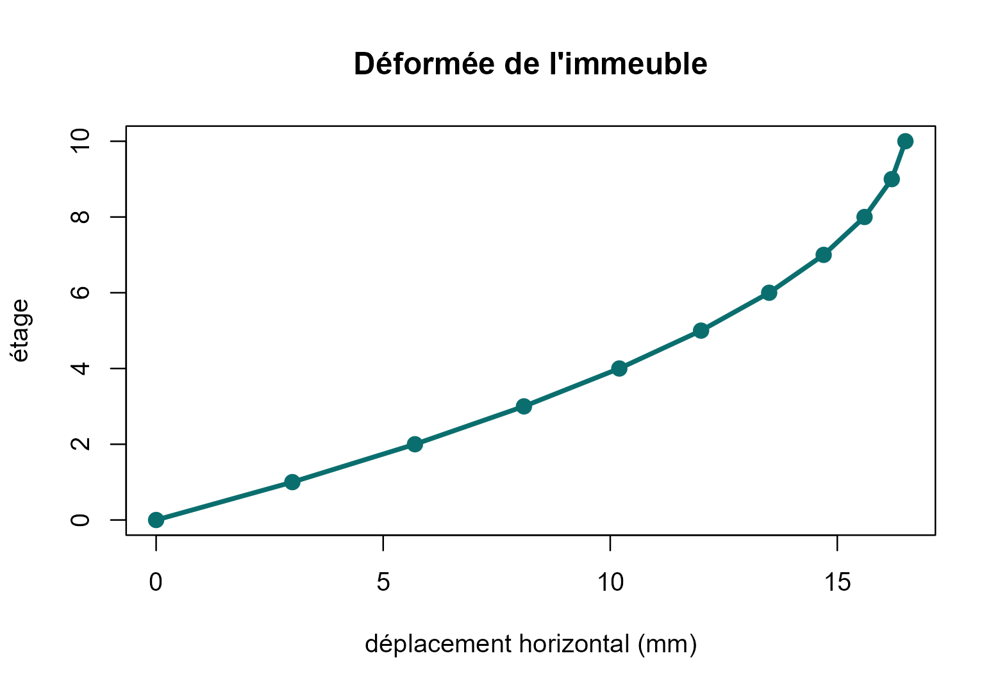
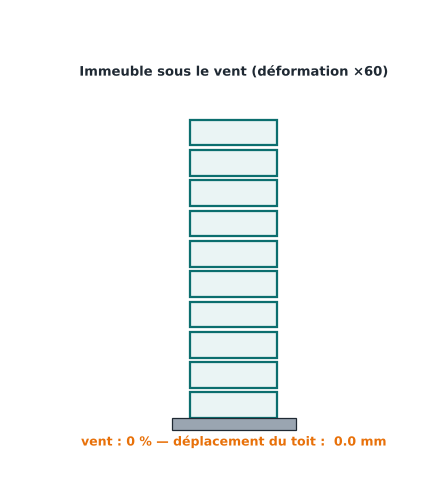
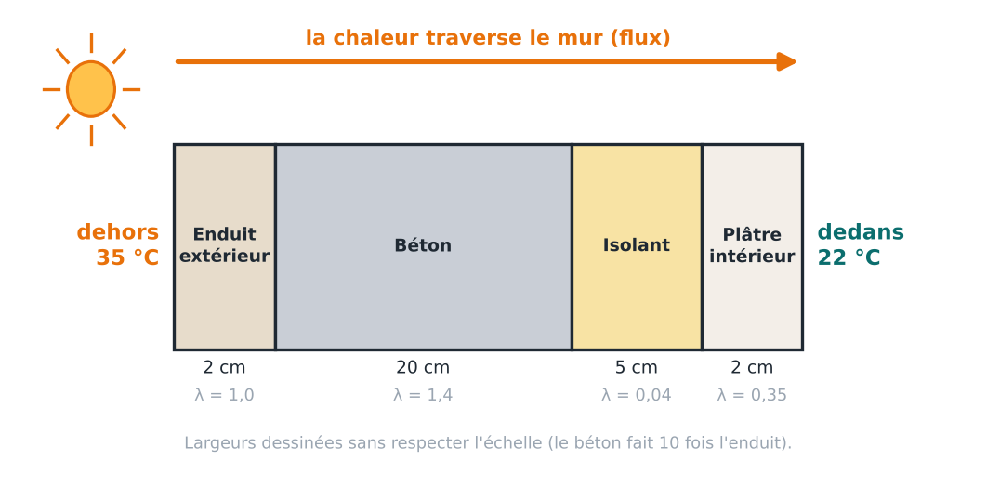
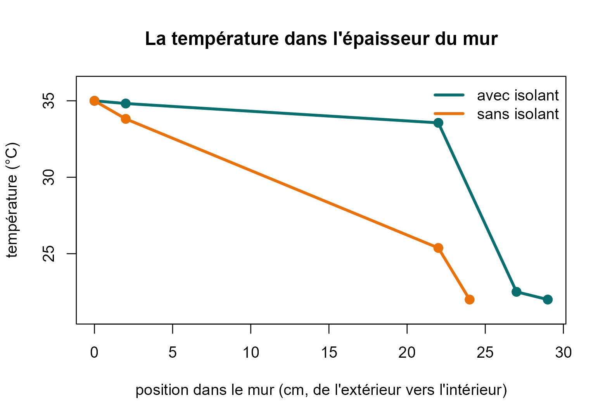

4. Applications en ingénierie
appliquer.RmdDeux problèmes d’ingénieur, résolus avec l’algorithme :
- Génie civil : un immeuble de 10 étages sous le vent.
- Génie thermique : faut-il isoler un mur ?
Dans chaque cas, la démarche est la même : poser la
question, modéliser (écrire K et f),
résoudre avec cg(), puis
interpréter le résultat pour prendre une décision.
Les deux applications précédentes ont déjà montré le génie électrique (le circuit de la page 1) et l’hydraulique (le réseau d’eau de la page 2). Voici deux domaines de plus, traités en détail.
Génie civil : un immeuble sous le vent
La question
Le vent pousse sur un immeuble de 10 étages. De combien l’immeuble se déforme-t-il ? Si la déformation entre deux étages est trop grande, les cloisons fissurent et les vitres cassent. L’ingénieur doit le vérifier avant de construire.
Le modèle
On représente l’immeuble par des ressorts empilés : chaque étage est retenu par l’étage du dessous, comme par un ressort.

- u : le déplacement horizontal de chaque étage (ce qu’on cherche) ;
- f : la force du vent sur chaque étage : 30 kN ;
- K : décrit les ressorts. Chaque étage a une raideur de 100 000 kN/m : la force qu’il faut pour le déformer d’un mètre.
C’est exactement le même raisonnement que pour le circuit. Pour un
étage, la loi s’écrit : la force du vent est égale à la force que
transmettent les ressorts du dessous et du dessus. La raideur joue
le rôle de la conductance, le déplacement joue le rôle de la tension, la
force joue le rôle du courant. On peut donc réutiliser
chaine().
Le 0 à la fin de la liste dit qu’il n’y a rien au-dessus du toit pour le retenir.
k <- rep(1e5, 10) # la raideur de chaque étage (kN/m)
A <- chaine(c(k, 0)) # la matrice K : le 0 final = le toit n'est retenu par rien d'autre
vent <- rep(30, 10) # 30 kN de vent sur chaque étage
res <- cg(A, vent)
u <- res$x * 1000 # on passe des mètres aux millimètres
round(u, 1) # déplacement de chaque étage (mm)## [1] 3.0 5.7 8.1 10.2 12.0 13.5 14.7 15.6 16.2 16.5Les résultats
Le déplacement augmente avec la hauteur : le toit bouge de 16,5 mm. Mais ce qui casse les cloisons n’est pas le déplacement total : c’est la dérive, c’est-à-dire de combien un étage bouge par rapport à celui du dessous.
derive <- diff(c(0, u)) # déplacement d'un étage moins celui du dessous
round(derive, 1) # dérive de chaque étage (mm)## [1] 3.0 2.7 2.4 2.1 1.8 1.5 1.2 0.9 0.6 0.3La dérive est maximale au rez-de-chaussée (3 mm). Pourquoi ? Parce que le premier étage doit retenir la poussée de tous les étages au-dessus. Plus on monte, moins il y a d’étages à retenir : la dérive diminue.
plot(c(0, u), 0:10, type = "o", pch = 19, lwd = 3, col = "#0B6E6E",
xlab = "déplacement horizontal (mm)", ylab = "étage",
main = "Déformée de l'immeuble")

Et si un étage est plus souple ?
Imaginons que le 5e étage ait de grandes baies vitrées : sa raideur tombe à 40 % de celle des autres.
k2 <- k
k2[5] <- 0.4 * 1e5
res2 <- cg(chaine(c(k2, 0)), vent)
derive2 <- diff(c(0, res2$x * 1000))
round(derive2, 1) # dérive de chaque étage (mm)## [1] 3.0 2.7 2.4 2.1 4.5 1.5 1.2 0.9 0.6 0.3À l’étage 5, la dérive passe de 1,8 mm à 4,5 mm, et le toit passe à 19,2 mm. Un étage souple concentre la déformation : il se déforme beaucoup plus, car il est le maillon faible de la chaîne.
Génie thermique : faut-il isoler un mur ?
La question
Il fait 35 °C dehors et 22 °C dedans (climatisation). Un mur sépare les deux. Quelle quantité de chaleur le traverse ? Et un isolant de 5 cm change-t-il vraiment les choses ? Cette chaleur doit être évacuée par la climatisation : plus elle est grande, plus on consomme d’électricité.
Le modèle
Le mur est fait de couches : enduit, béton, isolant, plâtre (de l’extérieur vers l’intérieur).

La chaleur traverse chaque couche comme le courant traverse un fil. Chaque couche a une conductance : elle laisse plus ou moins passer la chaleur. Elle se calcule avec
où λ est la conductivité thermique du matériau (grande pour le béton, minuscule pour un isolant).
| Circuit électrique | Mur |
|---|---|
| tension | température |
| courant | flux de chaleur |
| fil | couche |
Les inconnues sont les températures aux interfaces entre les couches. Les températures extérieure et intérieure sont imposées : elles entrent dans le second membre.
mur <- function(e, lam, T_ext = 35, T_int = 22) {
g <- lam / e # conductance de chaque couche
n <- length(g) - 1 # nombre d'interfaces entre deux couches
b <- rep(0, n)
b[1] <- g[1] * T_ext # la première couche touche l'extérieur (35 °C)
b[n] <- b[n] + g[n + 1] * T_int # la dernière touche l'intérieur (22 °C)
T_inter <- cg(chaine(g), b)$x # on résout : températures aux interfaces
list(T = c(T_ext, T_inter, T_int),
position = cumsum(c(0, e)) * 100, # position dans le mur (cm)
flux = g[1] * (T_ext - T_inter[1])) # chaleur qui traverse le mur
}Les résultats
On calcule d’abord le mur isolé, puis le même mur sans la couche d’isolant.
e <- c(0.02, 0.20, 0.05, 0.02) # épaisseurs : enduit, béton, isolant, plâtre (m)
lam <- c(1.0, 1.4, 0.04, 0.35) # conductivité thermique de chaque matériau
avec <- mur(e, lam)
sans <- mur(e[-3], lam[-3]) # on retire la couche n°3 (l'isolant)
c(avec_isolant = avec$flux, sans_isolant = sans$flux) # chaleur en W par m2## avec_isolant sans_isolant
## 8.843537 59.090909L’isolant fait passer le flux de 59 W/m² à 8,8 W/m² : 85 % de chaleur en moins. Pour un mur de 20 m², la climatisation doit évacuer 177 W au lieu de 1 182 W.
plot(avec$position, avec$T, type = "o", pch = 19, lwd = 3, col = "#0B6E6E", ylim = c(21, 36),
xlab = "position dans le mur (cm, de l'extérieur vers l'intérieur)",
ylab = "température (°C)", main = "La température dans l'épaisseur du mur")
lines(sans$position, sans$T, type = "o", pch = 19, lwd = 3, col = "#E8710A")
legend("topright", c("avec isolant", "sans isolant"), col = c("#0B6E6E", "#E8710A"),
lwd = 3, bty = "n")
Comment lire ce graphique. Chaque point est une interface entre deux couches. Avec isolant (vert), la température reste entre 34,8 et 33,6 °C jusqu’au béton, puis chute de 33,6 à 22,5 °C dans l’isolant seul. C’est la couche isolante qui « porte » presque tout l’écart de température : elle bloque la chaleur. Sans isolant (orange), c’est le béton qui absorbe la baisse (de 33,8 à 25,4 °C), mais il laisse passer beaucoup plus de chaleur : le flux est 6 fois plus grand.
Et dans d’autres domaines ?
Le même principe sert dès qu’une quantité se répartit dans un réseau ou un milieu : écoulement d’eau dans le sol (géotechnique), potentiel électrique (électrostatique), éléments finis en mécanique des structures, traitement d’image, statistiques (moindres carrés). Dans les logiciels d’éléments finis, les systèmes dépassent le million d’inconnues : c’est là que le gradient conjugué devient indispensable.
Suite : 5. Les tests